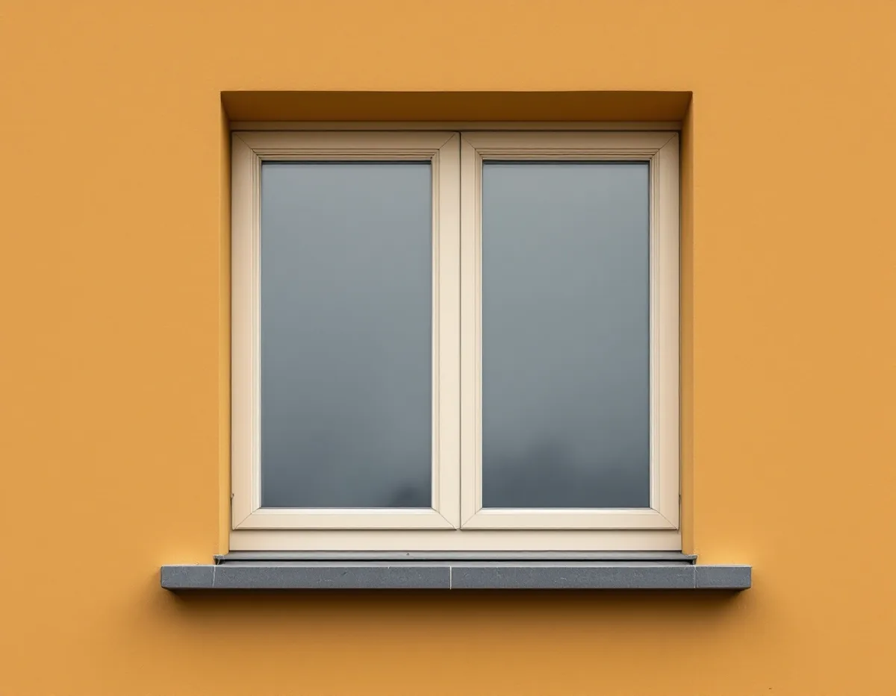

Underlag från föreningen
Vi tar del av underhållsplanen och ser vilken klass huset har på Stadsmuseets karta.
Ska föreningens fönster bytas eller renoveras? Geal Entreprenad AB renoverar fönster i Södermalms flerbostadshus och i de få småhusen, och vi börjar med att besiktiga fönstren ett och ett innan något beslut fattas.

I stadens områdesfakta för 2025 har Södermalms stadsdelsområde 77 525 bostäder. 43 680 av dem är bostadsrätter och bara 211 ligger i småhus, medan 73 952 finns i flerbostadshus och övriga hus. De allra flesta bostäderna ligger alltså i flerbostadshus, och av småhusen är bara ett fåtal äganderätter.
Stadens översiktsplan pekar ut flera värdekärnor inom riksintresset för kulturmiljövården. Den tidiga bebyggelsen på malmarna – Fjällgatan, Katarinaberget, Vita bergen, Åsöberget och Östra Mariaberget – nämns tillsammans med den klassiska stenstaden från 1870–1930 och storgårdskvarteren Draget och Ryssjan vid Blecktornsparken från 1920-talet. För malmarnas bebyggelse räknar planen upp byggnadsdetaljer som fönster, entréportar och ornamentik bland de karaktärsdrag som tillsammans bildar en karaktäristisk helhetsbild.
Riksantikvarieämbetets skrift om fönster beskriver ett mönster vid ombyggnader: de gamla bågarna slängs i container och ersätts med nya fönster i instickskarmar. Enligt skriften beror det oftast inte i första hand på att fönstren är dåliga, utan på att kostnaden för en renovering är svårare att beräkna än kostnaden för nya fönster. En viktig förutsättning för att bevara dem är enligt skriften en noggrann konditionsbesiktning, som gör att åtgärderna kan preciseras och kvantifieras – till exempel att en viss andel av droppnäsorna och karmbottenstyckena ska bytas.
Ett exempel i skriften gäller ett hus från 1903 vid Birger Jarlsgatan i Stockholm med ursprungliga kopplade, inåtgående fönster. Efter en summarisk besiktning dömdes de först ut. När nära 70 procent av de 215 fönstren sedan besiktigades noggrant visade det sig att de i huvudsak var i god kondition. Problemen fanns i droppnäsorna, där 41 procent var i bristfälligt skick, och i glasningslisterna av trä, där 66 procent var urlakade eller rötskadade. Fönstren behölls, de utsatta delarna byttes mot utvald kärnfuru och resten justerades, rengjordes och målades.
Kopplade, inåtgående fönster har några typiska detaljer. Riksantikvarieämbetet förklarar att fönster utan mittpost stängs med en spanjolettstång, och att droppnäsan – en trälist eller ett bleck som leder bort vattnet från bågens nederkant – är vanligast på inåtgående fönster. Under senare delen av 1800-talet fick fönster i stenhus ibland ett karmbottenstycke med droppnäsa i stället för fönsterbleck, och från sekelskiftet blev det vanligt med bleck som täcker hela den utåt blottlagda delen av karmbottenstycket, en följd av att bågarna går inåt.
I 1903-exemplet var det de mest utsatta delarna som hade tagit skada, och det är dem vi byter. Originaldelarna satt kvar på de flesta övre bågarna, som sitter mer skyddade. Vid skador på karmbottenstycken räcker det enligt skriften i allmänhet att limma in nytt virke i karmens yttre, mest utsatta del.
Plan- och bygglagen kräver att ett byggnadsverk hålls i vårdat skick och underhålls så att utformningen och de tekniska egenskaperna i huvudsak bevaras. Är byggnaden särskilt värdefull ska den underhållas så att de särskilda värdena bevaras. Stadsmuseets klassificeringskarta markerar bebyggelsen med blått, grönt, gult och grått. Är byggnaden blå- eller grönmarkerad, eller ligger den inom ett riksintresse för kulturmiljövården, behöver du enligt staden söka bygglov för åtgärder som annars kan vara bygglovsbefriade.
Staden påpekar också att vissa detaljplaner har utökad lovplikt, ibland även för underhållsåtgärder, och att en antikvarisk förundersökning kan behövas före arbetet. Översiktsplanen noterar att många hus i stenstaden har en relativt låg klass, gul, för att de förändrats sedan byggtiden, men att det är betydelsen för stadsmiljön som ska vara avgörande vid prövningen, inte den enskilda byggnadens klass. När material, kulör, profiler och indelning behålls handlar det inte om någon av de fönsterändringar som staden räknar upp. Ska fönstren ändå bytas, se fönsterbyte, och om snickeri inne i lägenheterna, se snickare på Södermalm.
Vi tar del av underhållsplanen och ser vilken klass huset har på Stadsmuseets karta.
Fönstren besiktigas ett och ett, och skadorna noteras för varje del.
Förslaget anger hur många droppnäsor, glasningslister och karmbottenstycken som behöver bytas.
Ordningen läggs så att varje lägenhet berörs så kort tid som möjligt.
Utsatta delar byts mot kärnfuru, och bågarna kittas och målas.
Spanjoletter och beslag ställs in så att bågarna sluter.
Rotavdraget gäller arbete i en bostad som du äger och betalar för. I en bostadsrätt ger Skatteverket bara avdrag för arbete inne i bostaden som du ansvarar för enligt stadgarna – på fönster till exempel glas i den inre bågen och tätningslist. Arbete på fönstrens utsida och mellan bågarna, och på gemensamma ytor som fasaden, ger inget avdrag för bostadsrättshavaren.
Äger du ett av Södermalms få småhus räknas att reparera, byta ut och måla fönster som rotarbete. Avdraget är högst 30 procent av arbetskostnaden, med taket 50 000 kr per person och år och 75 000 kr tillsammans med rutavdrag, och det dras på fakturan.
Antalet fönster, hur många delar som behöver bytas enligt besiktningen, hur mycket gammal färg som ska bort och hur arbetet måste planeras mot lägenheterna styr kostnaden. Efter ett gratis platsbesök får styrelsen ett skriftligt kostnadsförslag.
Byta eller renovera fönster.
Fönsterbyte i Stockholm →Vattenskador, ansvar och husens olika åldrar.
Badrumsrenovering på Södermalm →Kalkputs, kalkfärg och plåt på lister.
Fasadrenovering på Södermalm →Renovera, riva och sortera golvet.
Golvläggare på Södermalm →Slipa golven i den nyköpta lägenheten.
Golvslipning på Södermalm →Kokvrå, gasspis och kulturvärden i lägenheten.
Köksrenovering på Södermalm →Äldre färglager, bättring och provytor.
Målare på Södermalm →Väggar, dörrar och förvaring i lägenhet.
Snickare på Södermalm →Ny tapet och gamla tapetlager.
Tapetsering på Södermalm →Lägenheten i takt med stambytet.
Totalrenovering på Södermalm →